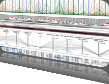

5th Symposium on Biological Data Visualization
10- 11 July // Dublin, Ireland @ ISMB/ECCB 2015
10- 11 July // Dublin, Ireland @ ISMB/ECCB 2015

Speakers
Keynote
Scientific Publishing in a Technological Age
The scientific publishing landscape is changing rapidly and publishers, authors and readers are working hard to adapt. Advances in research technologies are generating increasing amounts of data that require commensurate advances in accessibility, analysis and visualization. Although digital technologies provide possible solutions to allow publishers to fully participate in this revolution and add new capabilities, it has proven challenging to adapt the traditional publishing model to take full advantage of new opportunities. I will discuss these challenges and opportunities and what publishers are doing to meet them from the point of view of a chief editor at Nature Publishing Group. Particular emphasis will be given to data handling and visualization, the role of computer scientists and the challenges in bridging the distinct biology and computer science cultures.
|
Daniel Evanko, Ph.D. Daniel Evanko graduated from Northwestern University with a B.S. in Biomedical Engineering. He obtained a Ph.D. in Molecular Pharmacology and Structural Biology and performed post-doctoral work on G protein targeting and regulation at Thomas Jefferson University. As a Research Associate at the University of Pennsylvania Dr. Evanko shifted his scientific focus to fluorescence imaging technologies for studying astrocyte-neuron interactions. He joined the staff of Nature Methods in August of 2004 as an Assistant Editor handling manuscripts and the first issue was published in October. After serving as an Associate and then Senior Editor he became Chief Editor in 2008. While at Nature Methods Dr. Evanko has interviewed dozens of scientists, edited hundreds of manuscripts, written over 100 articles, created and edited a popular column of practical advice on visualizing scientific data, and in 2013 started a new column on statistics. He has been involved in numerous internal initiatives, including ones related to visualization and statistics. |
Challenges Session
We have selected a range of speakers that, together with the keynote speaker, will cover developments in a broad range of active research topics in modern biological data visualization, from genes to proteins to organisms to populations. The speakers include developers of visualization tools widely used in biology, as well as active users who apply visualization methods to discover new biological knowledge.
Engaging today’s genomics resources
Advances in next-generation sequencing platforms have reshaped the landscape of genomic and epigenomic research. Large consortiums such as the ENCyclopedia of DNA Elements (ENCODE), the Roadmap Epigenomics project and The Cancer Genome Atlas (TCGA) have generated tens of thousands of sequencing-based genome-wide datasets, creating a reference and resource for the scientific community. Small groups of researchers are now able to rapidly obtain huge volumes of genomic data and are in great need of putting their own data in the context of the consortium data for comparison. These data are often accompanied by rich metadata describing the sample and experiment, critical for their interpretation. Fast evolving technologies, such as those interrogating long-range chromatin interactions, are generating new types of data in similarly large volumes. Visualizing, navigating, and interpreting such data in a meaningful way is a daunting challenge. In this presentation I will discuss the present challenges in genomic data visualization and the rapid evolution of Genome Browsers.
|
Ting Wang, Ph.D. Ting Wang is an assistant professor at the Genetics Department and Center for Genome Sciences at Washington University in St. Louis. He has a PhD in Computational Biology. His research focuses on understanding genetic and epigenetic impact of transposable element on human regulatory networks and their role in human diseases. He develops algorithms for identifying regulatory motifs, and analytical and visualization methodologies to integrate genomic and epigenomic data. He is a co-inventor of the UCSC Cancer Genomics Browser, inventor of the Wash U Epigenome Browser, and a co-investigator of the Epigenome Roadmap Mapping Centers. |
Tools for Interactive Visualization and Analysis of Complex Biological Structures
As experimental methods to determine the detailed structures of molecules and molecular assemblies continue to rapidly advance, and as databases of modeled macromolecular complexes also swiftly grow in both size and complexity, the challenges of easily visualizing, analyzing, and comparing these structures become increasing difficult. Particularly onerous are models that encompass scales that range from the atomic to cellular and data that is dynamical in nature. Yet the ambitious goal of creating an accurate spatiotemporal model of the cell and all of its molecular processes, with maximal accuracy, resolution, and completeness, is nevertheless crucial to a thorough understanding of biological function and the molecular basis of disease. Because of the complexity of this data, interactive 3D visualization tools greatly facilitate analysis tasks by enabling researchers to explore, interpret, and manipulate their data. This talk will highlight the challenges associated with visualization of macromolecules at multiple spatial resolutions and illustrate some of the existing tools used to address this problem domain. Also to be discussed are the challenges that tool builders must face if their tools are to be adopted by the larger scientific community.
|
Thomas Ferrin, Ph.D. Tom originally hails from Minneapolis, where he first became interested in computing while writing codes for a Control Data Corp. model 6600 computer, the first machine to be called a “supercomputer.” In the early 1970’s, while working as a bioengineer, he became enamored with the application of minicomputers such as the Digital Equipment Corp. PDP-8 and Data General Nova for real-time control and analysis of scientific experiments. As the data collected from these experiments became larger and more complex, he turned to interactive computer graphics as a means of displaying and analyzing the data, and ultimately gaining insight into the underlying biophysical processes at play. Thus began a 40+ year career at the University of California, San Francisco (UCSF) focused on developing tools for the interactive visualization and analysis of molecular structure at scales ranging from the atomic to the supramolecular. In addition to tool development, Tom’s lab has a long history of documenting, distributing, and providing training for these tools. Their UCSF Chimera package is used worldwide and has been cited in more than 5,400 journal articles. In recent years his research group has also contributed tools that emphasize integrating diverse types of biomolecular data, including atomic-resolution coordinates, density maps, sequences, annotations, and network representations of protein similarity, binding interactions, and biological pathways. |
Follow us on Twitter
BioVis 2013 is an official symposium of


BioVis 2013 is affiliated with

Join ISCB and get a 20% member discount at BioVis'13.
BioVis 2013 Supportes
Silver:

Bronze:


Deadlines
Paper Deadline
- Abstract:
April 30, 2013
- Full Paper:
May 7, 2013
Poster Deadline
August 2, 2013
Data Contest Deadline
August 2, 2013
Redesign Contest Deadline
August 2, 2013